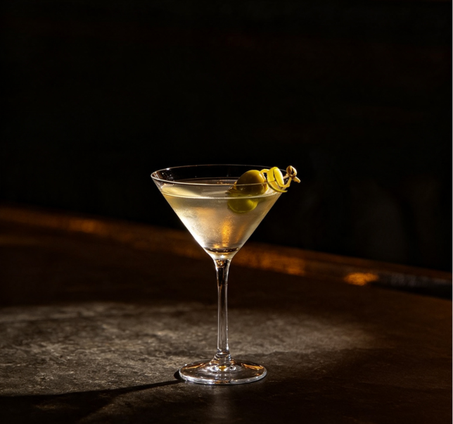
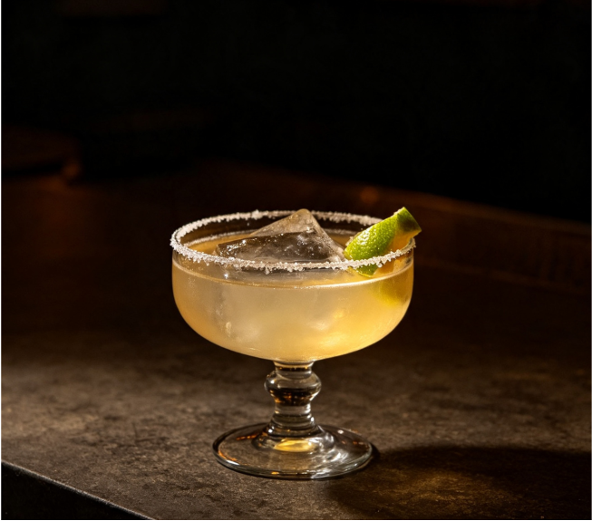
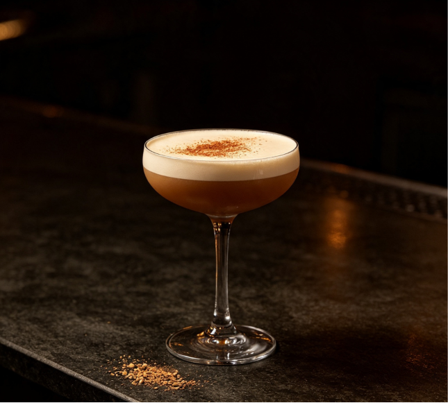
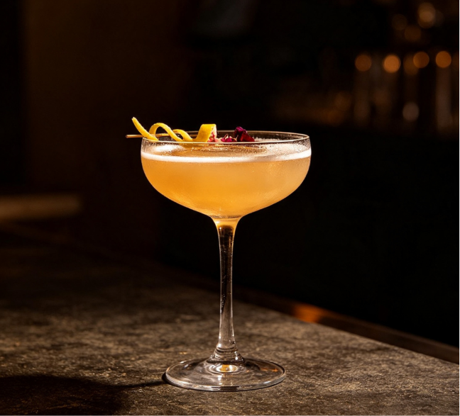

每一杯都是调酒史上的里程碑

Dry Martini
金酒 60ml · 干味美思 10ml
"摇晃，不要搅拌" —— 詹姆斯·邦德

Daiquiri
白朗姆 60ml · 青柠汁 20ml · 细砂糖
海明威在哈瓦那的日常伴侣

Alexander
白兰地 30ml · 可可利口酒 · 鲜奶油
丝滑如甜点，二十世纪初的社交名饮

Boulevardier
波本 45ml · 金巴利 · 甜味美思
内格罗尼的威士忌变奏，更醇厚深邃